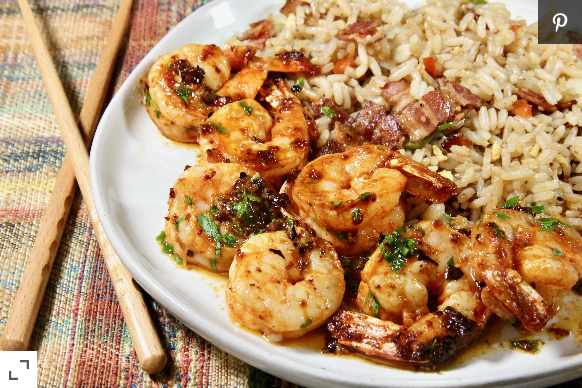

Chile-Garlic Shrimp

Tired of your boring old bland shrimp dishes? Try this amazing chile-garlic shrimp that will take your taste buds to another deminsion!
Ingredients Needed:
- 1 Pound Uncooked Medium Shrimp, Peeled and Deveined
- 1 (1.6 oz) Package Buffalo Wing Seasoning
- 5 Tablespoons Unsalted Butter
- 2 Teaspoons Bottled Minced Garlic
- 1/4 Teaspoon Crushed Red Pepper Flakes
- 1/4 Cup Coarsely Choped Fresh Cilantro
- 2 Teapoons Lime Juice
- 4 Lime Wedges (Optional)
Instructions to Make this Dish:
- Rinse the shrimp with cold water and pat dry.
- Combine shrimp and seasoning mix. Coat shrimp evenly
- Over medium heat, heat the butter, garlic, and red pepper flakes until butter has melted.
- Raise the heat to medium-high; when the butter begins to sizzle add the shrimp.
- Cook the shrimp until they are bright pink on the outside, and no longer transparent. About 4-5 minutes.
- Remove pan from heat and stir in the cilantro and lime juice. Garnish with lime wedges.